| 行事記録・写真 | 10 | 「テレマーク入門」へようこそ |
| ＴＡＪ黒姫テレマークスキースクール指導員の先生方のご指導で2日間の講習を行った。全く初めての2名、中級を目指している初級者4名、上級を目指している中級者4名の3班に分かれ3名の指導員＋カメラマンという贅沢な講習であった。3日目の午前中は、カットソールのスキーを履いて全員でスキーハイキング。 校長先生は、宿泊したペンションのオーナーであり、おいしい食事を作ってくださるシェフでもある。ペンション・ポアール（暖炉）の名にふさわしい立派な暖炉のある温かく快適なダイニングルームで、毎日、大満足のフランス料理や鍋、美味しいワインやお酒を楽しむことができた。 |
A | 開 催 日 | 2013年1月8日-11日 | ||
| リーダー | 吉田登美子・名取雄一 | ||||
| 写真・文 | 西田進 （実施報告および黒姫テレマークスクール撮影の写真も使用した） | ||||
| 参加人数 | 10名 | ||||
| ペンション・ポアール |
| 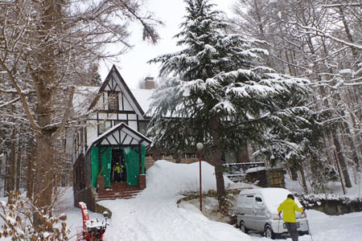 | A | 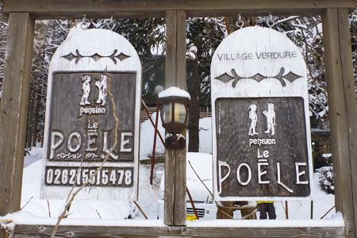 |
| ペンションは、カラマツ林の中のモミの木が目印 | ペンション名のポアール（Poele）は暖炉のこと |
| 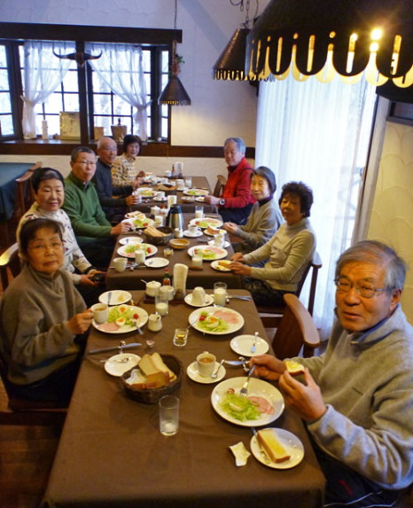 | A | 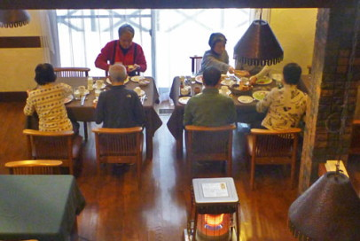 |
| 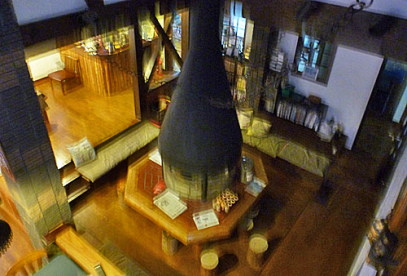 | ||
| 朝食風景 | 夕食後は大きな暖炉を囲む（ボケた写真で済みません） |
| ある日のペンション・ポアールの夕食 |
| 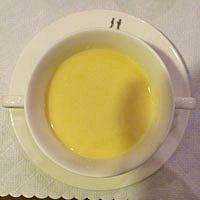 | A | 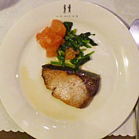 | A | 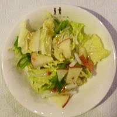 | A | 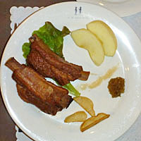 |
| ポワール畑のコーンスープ | 寒ブリのジンジャーソース | 白菜サラダ | スペアリブ |
| オードブルのホタテのムースは撮影し忘れた |
| 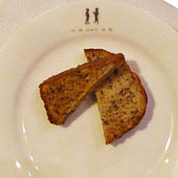 | A | 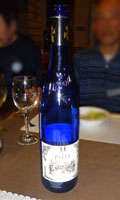 | A | 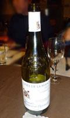 | A | 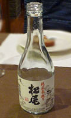 | A | |
| バナナケーキ、コーヒー・ティー | 美味しい世界のワイン | 地酒 | シェフはオーナで校長先生 | |||||
| テレマークスキー講習会 |
| 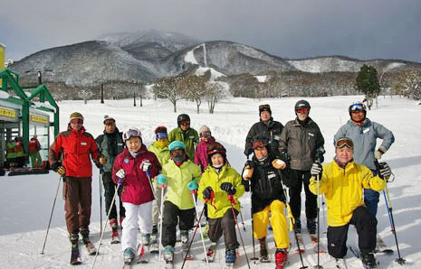 | A | 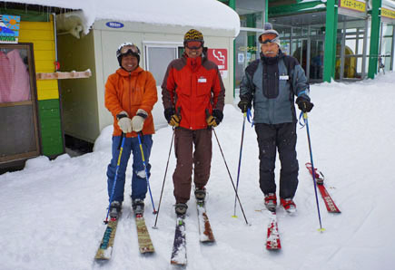 |
| 我々10人とインストラクター3人 |
中央が中川校長先生（中級者担当）、 左が松澤先生（初級者担当）、右が大田先生（初心者担当） |
| 初心者講習 |
| テレマークスキーが初めての初心者には、スキーの履き方から教えて頂いた。先ずはテレマークスキーでアルペンの滑りをして慣れることから始め、テレマークスキーの重心の位置を体感した。 |
| 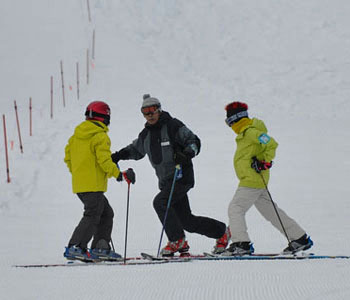 | A | 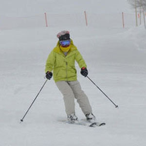 | A | 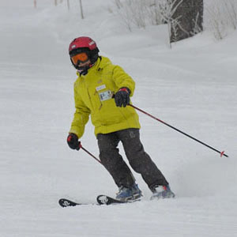 |
| 残念ですが、初心者の練習ビデオはありません | ||||
| 初級者講習 |
| 初級者は緩斜面で徹底的にテレマーク姿勢が取れるまで、重心の位置、目線の大切さを学び、新雪も体験した。「目からうろこ」とまではいかないものの今までとは違った滑りができるようになった。 |
| 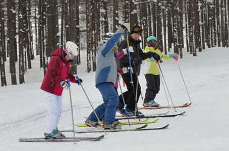 | A | 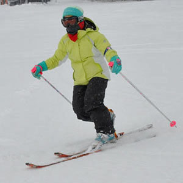 |
| 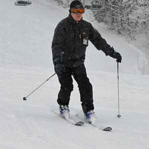 | A | 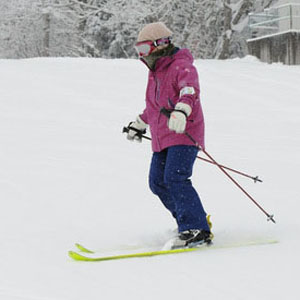 | A | 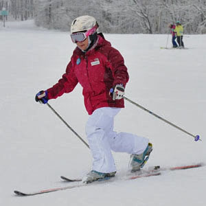 |
| 初級者の練習ビデオ（画像をクリックしてご覧下さい） |
| 中級者講習 |
| 中級者は黒姫のゲレンデを縦横無尽に滑ってそれぞれの注意点を指導され、ますます足前を上げた。 |
| 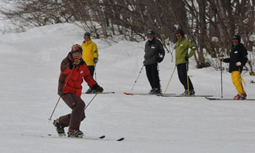 | A | 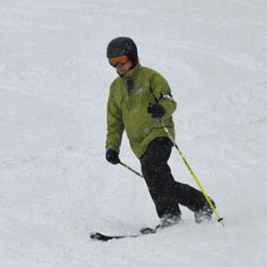 |
| 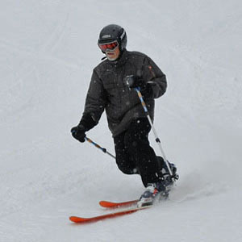 | A | 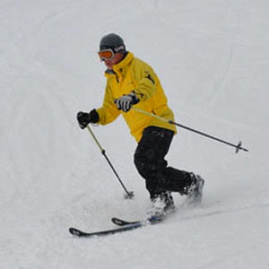 | A | 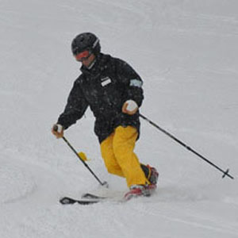 |
| 中級者の練習ビデオ（画像をクリックしてご覧下さい） |
| 雪上ハイキング |
| 女性山岳ガイドの優しく丁寧な案内で、シンと静まりかえった森の中に分け入った。雪の中で芽吹きの準備をしている樹々を観察したり、イノシシの足跡を見つけたり、雪のテ—ブルを作って温かいジンジャーティーで休憩して、楽しい癒しの時を満喫した。 |
| 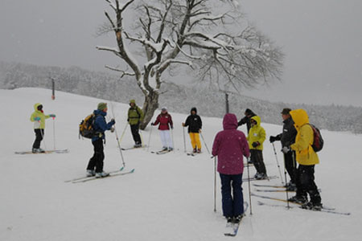 | A | |
| ゲレンデに集合し、日本山岳ガイド協会の杉本さんのブリーフィング | 信濃路自然歩道に入る |
| 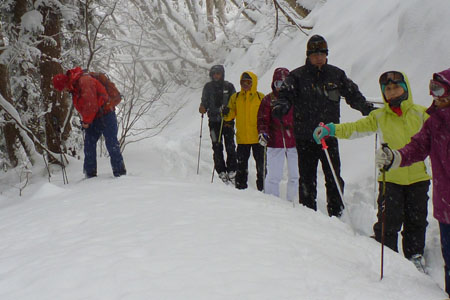 | A | 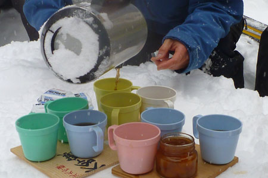 |
| 積雪推測ゲーム、正解は１７０ｃｍでした | 雪のテーブルで温かいジンジャーティーを頂く |
| 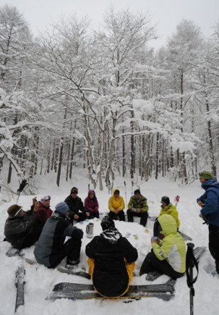 | A | 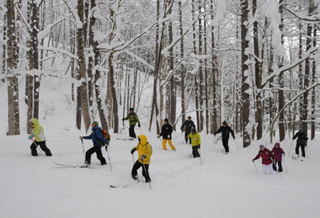 |
| お茶の後、好き勝手なところを歩いて雪を楽しむ | ||
| 雪上ハイキングのビデオ（画像をクリックしてご覧下さい） |
| テレマークスキーの上達、楽しい雪上ハイキング、ペンションの美味しい食事と語らいなど、有意義な「テレマーク入門」でした。 |